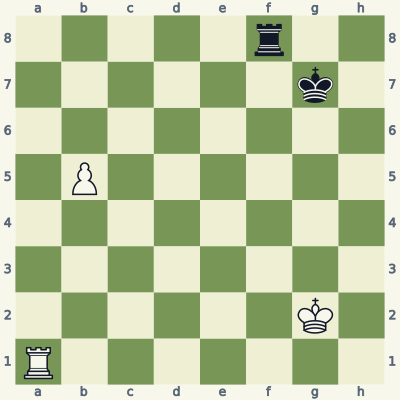
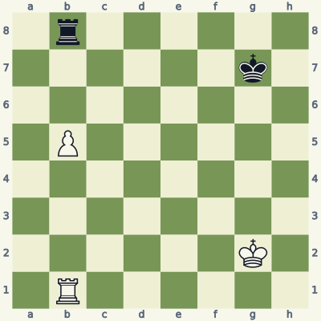
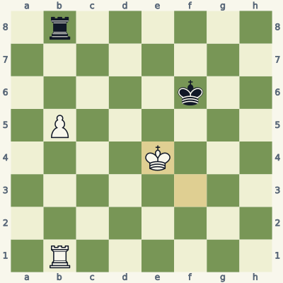
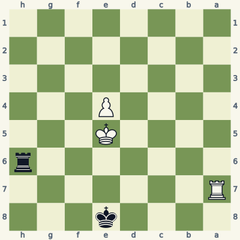
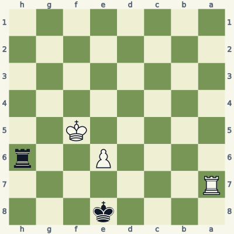
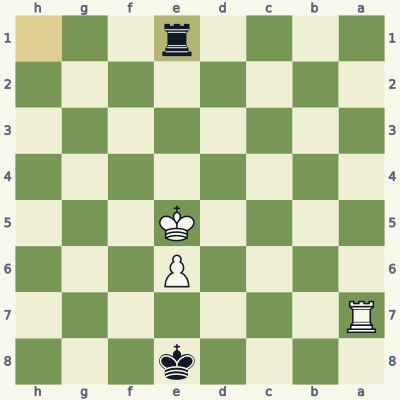
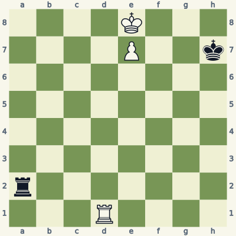
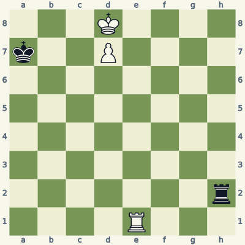

For players who know how the pieces move. Read the model, try the exercise without the answer, then explain the result aloud. Use a board and make the moves one at a time. Spend about 20 minutes per lesson; repeat it tomorrow and a week later.
Check the immediate threat, choose candidates, test the opponent's checks and captures, then inspect the final position. Some questions ask for a safe move or correct diagnosis rather than a unique best move. Sample replies illustrate ideas unless the explanation says they are forced.
Notation and replay help
K king · Q queen · R rook · B bishop · N knight. A pawn move has no piece letter. Nf3 means knight to f3; Rxc6 means rook captures on c6; + means check; # means mate; O-O means kingside castling; e8=Q means promotion. A line beginning 1... starts with Black. Diagrams face the player to move.
The PGN download loads starting positions and sample lines into a chess program. Position codes (FEN) let you recreate individual boards. The PDF and website work without an account.
Lesson 10.1
Coordinate the rook with the passer
A rook behind its own passed pawn can support the pawn as it advances. But activity, king support and the opponent's blockade determine whether the pawn can actually promote.

Model A · White to movePosition code5r2/6k1/8/1P6/8/8/6K1/R7 w - - 0 1
Read the position
White's passed pawn stands on b5.
The rook on a1 can move to b1, behind the pawn.
Black's rook can move to b8, in front of the pawn.
1. Rb1 Rb8 2. Kf3
Rb1 supports the b-pawn along its file. After ...Rb8, Kf3 begins to bring the king toward the center. White should improve the cooperation of king, rook and pawn instead of pushing automatically.
Both this starting position and the sample continuation are tablebase draws with best play. The lesson demonstrates a useful arrangement, not a guarantee that an extra pawn wins. Black's active rook and timely king approach can neutralize the passer.
Exercise B · White to move
Take five minutes. Write your reason and the opponent's reply before opening the answer.

Inspect what changed from the model.Position code1r6/6k1/8/1P6/8/8/6K1/1R6 w - - 0 1
Can White promote immediately through Black's rook on b8?
What useful role can the white king take?
Does the sample king approach prove a forced win?
Read the full explanation
No. The black rook occupies the promotion square and blocks the file. Even after the pawn advances, White must resolve that blockade.
Kf3 begins centralizing the king. After ...Kf6, Ke4 moves it toward the pawn and potential contact with Black's king. The rook continues supporting the pawn from behind.
No. The entire sample remains drawn with correct defense. The practical goal is to coordinate and create problems while recognizing that the defender has adequate resources. Calling every extra-pawn rook ending won would teach the wrong expectations.
1. Kf3 Kf6 2. Ke4

Position after the sample line; the last move is highlighted.
Score your explanation: 1 point for the fact and 1 for its consequence in each answer, out of 6. At 4 or below, replay the model and revisit tomorrow.
Where the idea can fail
"Rooks belong behind passed pawns" is a useful starting point, not an absolute rule. A rook may need to check, stop an immediate promotion, or take an undefended pawn instead.
Use it in your own games
Play this position from both sides. As White, improve king support; as Black, keep the rook active and stop the king from escorting the pawn uncontested.
The Philidor defense uses two stages: deny the attacking king entry across the sixth rank, then check from behind after the pawn advances far enough to obstruct its own king's shelter.

Model A · Black to movePosition code4k3/R7/7r/4K3/4P3/8/8/8 b - - 0 1
Read the position
Black's king stands in front of the pawn on the promotion file.
Black's rook on h6 controls the sixth rank, keeping White's king below it.
The white pawn starts on e4, so Black should not abandon that barrier without checking the timing.
Black waits along the sixth rank: ...Rb6 Kf5 ...Rh6 e5 ...Rb6. The rook still prevents the white king from reaching the sixth rank. After e6, the pawn itself stands on that rank, and Black switches to ...Rb1.
Now Ke5 is answered by ...Re1+, checking from behind. The white pawn on e6 interferes with the king's ability to find shelter in front of it. Every step of this exact demonstration remains a tablebase draw. The timing of the switch is the main idea.
Exercise B · Black to move
Take five minutes. Write your reason and the opponent's reply before opening the answer.

Inspect what changed from the model.Position code4k3/R7/4P2r/5K2/8/8/8/8 b - - 0 1
What important stage has already been reached by the pawn?
Should Black keep waiting on the sixth rank or switch to the rear-checking method?
Give a sample check after the white king approaches the pawn.
Read the full explanation
The pawn is already on e6. White has committed it to the sixth rank, the transition point illustrated in Model A.
...Rh1 switches to the rear. It creates checking distance and prepares checks along the file of the white king. The exact position is drawn with correct defense.
After Ke5, ...Re1+ checks from behind. Black must continue choosing checks and king squares accurately; this short line explains the method rather than enumerating every branch of the ending. Replay it from Black's side and verify that the drawing result is maintained.
1... Rh1 2. Ke5 Re1+

Position after the sample line; the last move is highlighted.
Score your explanation: 1 point for the fact and 1 for its consequence in each answer, out of 6. At 4 or below, replay the model and revisit tomorrow.
Where the idea can fail
Do not abandon the sixth rank just because the pawn reaches the fifth. Premature rear checks can lose in closely related positions. Check the pawn's rank, the king's access and the rook's checking distance.
Use it in your own games
Start with the pawn on e4 and defend the sixth rank. Repeat with the pawn on e6 and switch methods. Use a tablebase to catch a switch made one move too early.
In the Lucena position, a pawn on the seventh rank needs its king to step away from promotion. Preparing the rook on the fourth rank lets it later block the checks and protect the king.

Model A · White to movePosition code4K3/4P2k/8/8/8/8/r7/3R4 w - - 0 1
Read the position
White's king on e8 blocks its own pawn's promotion.
Black's king on h7 is too far away to prevent White's planned king route.
The white rook can prepare a shield with Rd4 before the king leaves e8.
Rd4 prepares the bridge. After ...Ra1 Kf7, Black checks with ...Rf1+. White goes Ke6, meets ...Re1+ with Kf6, and answers ...Rf1+ with Kg5. Now ...Rg1+ is met by Rg4.
The king on g5 protects the blocking rook on g4. If ...Rxg4+, Kxg4 leaves a winning king-and-pawn ending; otherwise White can escape the checks and promote. The king and rook must cooperate at the final square. Every step of this demonstrated line preserves a tablebase win.
Exercise B · White to move
Take five minutes. Write your reason and the opponent's reply before opening the answer.

Inspect what changed from the model.Position code3K4/k2P4/8/8/8/8/7r/4R3 w - - 0 1
Where should White place the rook before moving the king?
Follow the mirrored checking sequence. On which square does the rook eventually block?
After the block, what prevents Black from simply eliminating the rook and the pawn?
Read the full explanation
Re4 prepares a fourth-rank shield. The position is the left-right mirror of Model A, so the files change while the cooperation stays the same.
After ...Rh1 Kc7 Rc1+ Kd6 Rd1+ Kc6 Rc1+ Kb5 Rb1+, Rb4 interposes. Work through every check on a board: the king changes file, and the defending rook follows.
The king on b5 protects the rook on b4. After ...Rxb4+, Kxb4 leaves a winning king-and-pawn ending. If Black keeps the rook, White has stopped the checking sequence while preserving the promotion threat. The tablebase confirms the illustrated route keeps the win throughout.
Position after the sample line; the last move is highlighted.
Score your explanation: 1 point for the fact and 1 for its consequence in each answer, out of 6. At 4 or below, replay the model and revisit tomorrow.
Where the idea can fail
The bridge is a response to the particular checking sequence. The defender has other legal moves, so memorize the job of the fourth-rank rook rather than assuming every opponent repeats this line.
Use it in your own games
Replay the bridge from both sides without looking at the move list. Then choose a different black rook reply and ask which preparation still helps White escape the checks.
All six starts and listed moves in this book were checked for legality. Stockfish 19 reviewed candidates at depth 18. Available endings with seven or fewer pieces were checked against the Lichess tablebase, including every move of the demonstrated endgame lines. A strategic sample is not a claim of unique best play.
These original, AI-assisted explanations were written around the positions and revised after checking. The lesson data and validation notes make the examples inspectable. Further reading and practice: